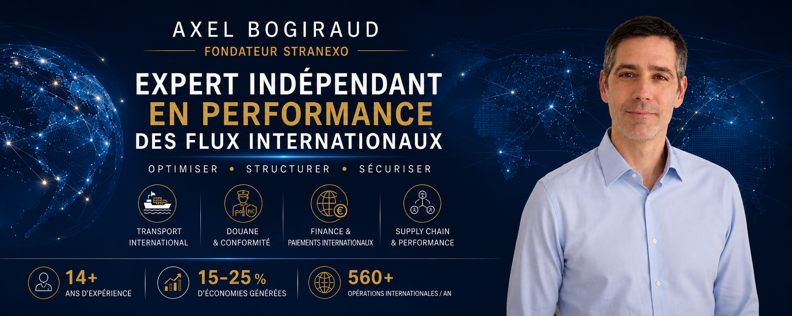

J'accompagne les PME/ETI industrielles et agroalimentaires dans l'optimisation, la sécurisation et la structuration de leurs flux internationaux.
Mon objectif : générer un impact durable, réduire les risques et créer de la valeur, sans complexifier inutilement les organisations.
100 % indépendant, sans conflit d'intérêt avec les solutions proposées, j'interviens exclusivement dans l'intérêt de mes clients afin de garantir des recommandations objectives, pragmatiques et orientées résultats.
Transformer les contraintes en leviers de performance.
Sécuriser les opérations et maîtriser les risques réglementaires.
Sécuriser les flux financiers liés au commerce international.
Structurer les organisations pour soutenir durablement la croissance.
Optimisation des flux internationaux et renégociation des schémas opérationnels.
Sécurisation des pratiques et accompagnement à la conformité avant contrôle.
Structuration des processus export et amélioration des pratiques internes.
Grâce à une approche globale intégrant douane, finance et Supply Chain.
Exemples de résultats obtenus lors d'accompagnements précédents.
Analyse rapide des risques, opportunités et leviers de performance.
Des solutions concrètes adaptées à la réalité de votre organisation.
Un pilotage expérimenté sans les contraintes d'un recrutement à temps plein.
Renforcer le pilotage stratégique et accompagner les transformations.
Structurer, coordonner et accompagner les évolutions nécessaires.
Aucune exécution opérationnelle, aucun conflit d'intérêt, uniquement l'intérêt de votre entreprise.
Axel Bogiraud
Fondateur – STRANEXO
📞 +33 7 68 62 13 03
📧 axel@stranexo.com
📍 Vallée du Rhône • Lyon • Aubenas • Montélimar • Buenos Aires
Scanner pour enregistrer mes coordonnées
Voir mon profil LinkedIn